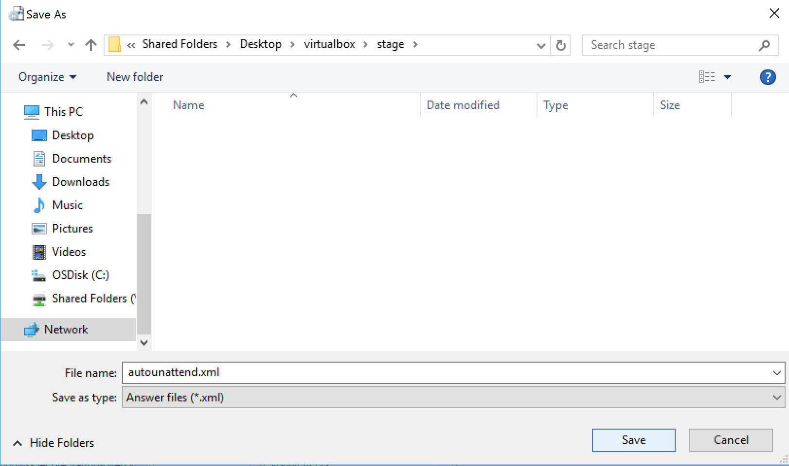

Windows Installation
KUBAM can be used to deploy Windows. We support
- Windows 2012 R2
- Windows 2016
At this time KUBAM requires a decent amount of manual steps to install Windows. We are working to make this easier but we still hope this method sucks less than other installers that you are using.
Windows Server 2016
To install Windows Server 2016, we will use unattended instalation feature. That will give us zero-touch deployment. We will use original Windows Server 2016 instalation iso in combination with "answer file". To prepare and create answer file (autounattend.xml) we are using Windows System Image Manager (SIM) tool from Windows Assessment and Deployment Kit (ADK). Preparation of the answer file should be done on Windows workstation or server. Answer file will be packed into .img file and mounted as additional drive in UCS vMedia Policy.
Download and install latest Windows ADK
Windows ADK can be downloaded from Microsoft website.

After ADK is downloaded we will start installation on the local machine. We just need to install Deployment Tools feature which consist Windows System Image Manager.

Creating "answer file" (autounattend.xml)
To be able to generate answer file, we need to copy content of Windows Server 2016 instalation image (.iso) to some folder on our workstation (or server). We can mount it to virtual optical drive, or extract it using archiver. In this example we are using Windows Server 2016 Evaluation (14393.0.161119-1705.RS1_REFRESH_SERVER_EVAL_X64FRE_EN-US.ISO), and unpacking ith with archiver.

We will not use extracted files after answer file creation, just original .iso image.
After we have instalation files on our workstation, we will run Windows System Image Manager that we have installed in previous step.

In System Image Manager we have to import instalation image to create answer file.

We are selecting install.wim from the /sources folder in extracted .iso image.

We have option to choose which version of operative system we want to prepare answer file for. We are selecting Windows Server 2016 SERVERDATACENTER.

We have to wait for few minutes while SIM is generating catalog file. After catalog file is created we will create new answer file (File > New Answer File). Now we can start adding components for our answer file.
First we are selecting amd64_Microsoft-Windows-International-Core-WinPE_neutral from lower left pane, and place it in answer file pane under 1. windowsPE.
Then we have to specify language settings, you will enter values for your language preferences, we are entering en-US:
- InputLocale: Keyboard layout (en-US)
- SystemLocale: system locale language (en-US)
- UILanguage: User Interface language (en-US)
- UserLocale: per-user settings for currency, time, numbers... (en-US)
Click + next to amd64_Microsoft-Windows-International-Core-WinPE_neutral in middle pane and navigate to SetupUILanguage to specify the language used during Windows Setup.

Next, we are selecting amd64Microsoft-Windows-Setup, placing it in 1. WindowsPE, navigating to DiskConfiguration and right clicking on it to _Insert New Disk.

We have to create partitions on Hard Drive. We are using this) Microsoft guide for configuring BIOS/MBR-Based Hard Drive Partitions:

Click + next to Disk in middle pane and right click on CreatePartition. Select Insert New CreatePartition. Populate settings based on above example. Repeate procedure for adding second partition.
Right click on ModifyPartitions. Select Insert New ModifyPartition. Again populate settings based on above example. Repeate procedure for modifying second partition.
Click + next to ImageInstall, navigate to InstallTo and populate it according to example.
After following this steps, your disk configuration should look like this:

If you want to configure UEFI/GPT-Based Hard Drive Partitions, you can follow this guide)
Now we are setting up InstallFrom under ImageInstall. As there can be multiple Windows images inside install.wim, we have to look into it to select image we want to install.
To get a list of included OS instalations, we are going to run dism tool (included in Windows OS) in command prompt and point to install.wim.
dism /Get-ImageInfo /ImageFile:<Path to file>\install.wim
We are getting following output from dism tool:

In this example we want to install Windows Server 2016 Datacenter Evaluation (Desktop Experience), which index is 4.
Right click on InstallFrom and select Insert New MetaData, under settings enter key /IMAGE/INDEX and value 4

Next, we have to set up user data. Click on UserData section and, set AcceptEula to true and fill in your settings.

If you want to add licence key, you can add it in ProductKey section. We are going to skip this part as we are working with evaluation image.
Next we are adding amd64_Microsoft-Windows-Shell-Setup both to 4. specialize and 7. oobeSystem section. Under 4. specialize section fill in ComputerName and TimeZone. For finding out right name your time zone you can use tzutil /l comand in command prompt on your windows machine.

From oobeSystem section navigate to UserAccounts > AdministratorPassword, and enter Administrator password (Example here is "Pa$$w0rd").

We will add amd64_Microsoft-Windows-TerminalServices-LocalSessionManager to 4 specialize and set fDenyTSConnections to false to enable the RDP connection.
Now we are going to configure folder where we will provide drivers for operative system during installation. From the left pane drag amd64_Microsoft-Windows-PnpCustomizationsWinPE to 1 windowsPE, right click on DriverPaths and Insert New PathAndCredentials

Next we are setting PathAndCredentials. Key value 1 and Path: %configsetroot%\drivers. With %configsetroot% variable we are pointing to drive containing answer file.

We need to set UseConfigurationSet under amd64_Microsoft-Windows-Setup to true so setup is going to use Driver Paths folder that we have set up and copy it under C:\Windows\ConfigSetRoot folder.

Under 7 oobeSystem inside amd64_Microsoft-Windows-Shell-Setup right click to FirstLogonCommands and Insert New SychronousCommand. Insert C:\Windows\ConfigSetRoot\drivers\configure\configureos.cmd to CommandLine, add Description and set Order as 1. File configureos.cmd will contain instruction to run powershell script that we will do rest of the setup.
We are configuring AutoLogon under same section that will run 3 times to run a PowerShell script with additional setup that will need reboots. We also need to provide password under Password section (same that we have setup in earlier steps, in this example: Pa$$w0rd).

Now we have ready answer file, and we are going to save it as autounattend.xml in our working folder (stage). 
Our answer file now looks like this:
<?xml version="1.0" encoding="utf-8"?>
<unattend xmlns="urn:schemas-microsoft-com:unattend">
<settings pass="windowsPE">
<component name="Microsoft-Windows-International-Core-WinPE" processorArchitecture="amd64" publicKeyToken="31bf3856ad364e35" language="neutral" versionScope="nonSxS" xmlns:wcm="http://schemas.microsoft.com/WMIConfig/2002/State" xmlns:xsi="http://www.w3.org/2001/XMLSchema-instance">
<SetupUILanguage>
<UILanguage>en-US</UILanguage>
</SetupUILanguage>
<InputLocale>en-US</InputLocale>
<SystemLocale>en-US</SystemLocale>
<UILanguage>en-US</UILanguage>
<UserLocale>en-US</UserLocale>
</component>
<component name="Microsoft-Windows-Setup" processorArchitecture="amd64" publicKeyToken="31bf3856ad364e35" language="neutral" versionScope="nonSxS" xmlns:wcm="http://schemas.microsoft.com/WMIConfig/2002/State" xmlns:xsi="http://www.w3.org/2001/XMLSchema-instance">
<DiskConfiguration>
<Disk wcm:action="add">
<CreatePartitions>
<CreatePartition wcm:action="add">
<Order>1</Order>
<Size>350</Size>
<Type>Primary</Type>
</CreatePartition>
<CreatePartition wcm:action="add">
<Order>2</Order>
<Extend>true</Extend>
<Type>Primary</Type>
</CreatePartition>
</CreatePartitions>
<ModifyPartitions>
<ModifyPartition wcm:action="add">
<Active>true</Active>
<Format>NTFS</Format>
<Label>System</Label>
<Order>1</Order>
<PartitionID>1</PartitionID>
</ModifyPartition>
<ModifyPartition wcm:action="add">
<Format>NTFS</Format>
<Label>Windows</Label>
<Letter>C</Letter>
<Order>2</Order>
<PartitionID>2</PartitionID>
</ModifyPartition>
</ModifyPartitions>
<DiskID>0</DiskID>
<WillWipeDisk>true</WillWipeDisk>
</Disk>
</DiskConfiguration>
<ImageInstall>
<OSImage>
<InstallFrom>
<MetaData wcm:action="add">
<Key>/IMAGE/INDEX</Key>
<Value>4</Value>
</MetaData>
</InstallFrom>
<InstallTo>
<DiskID>0</DiskID>
<PartitionID>2</PartitionID>
</InstallTo>
</OSImage>
</ImageInstall>
<UserData>
<AcceptEula>true</AcceptEula>
<FullName>Kubam</FullName>
<Organization>Kubam</Organization>
</UserData>
<UseConfigurationSet>true</UseConfigurationSet>
</component>
<component name="Microsoft-Windows-PnpCustomizationsWinPE" processorArchitecture="amd64" publicKeyToken="31bf3856ad364e35" language="neutral" versionScope="nonSxS" xmlns:wcm="http://schemas.microsoft.com/WMIConfig/2002/State" xmlns:xsi="http://www.w3.org/2001/XMLSchema-instance">
<DriverPaths>
<PathAndCredentials wcm:action="add" wcm:keyValue="1">
<Path>%configsetroot%\drivers</Path>
</PathAndCredentials>
</DriverPaths>
</component>
</settings>
<settings pass="specialize">
<component name="Microsoft-Windows-Shell-Setup" processorArchitecture="amd64" publicKeyToken="31bf3856ad364e35" language="neutral" versionScope="nonSxS" xmlns:wcm="http://schemas.microsoft.com/WMIConfig/2002/State" xmlns:xsi="http://www.w3.org/2001/XMLSchema-instance">
<ComputerName>Kubam</ComputerName>
<TimeZone>Pacific Standard Time_dstoff</TimeZone>
</component>
<component name="Microsoft-Windows-TerminalServices-LocalSessionManager" processorArchitecture="amd64" publicKeyToken="31bf3856ad364e35" language="neutral" versionScope="nonSxS" xmlns:wcm="http://schemas.microsoft.com/WMIConfig/2002/State" xmlns:xsi="http://www.w3.org/2001/XMLSchema-instance">
<fDenyTSConnections>false</fDenyTSConnections>
</component>
</settings>
<settings pass="oobeSystem">
<component name="Microsoft-Windows-Shell-Setup" processorArchitecture="amd64" publicKeyToken="31bf3856ad364e35" language="neutral" versionScope="nonSxS" xmlns:wcm="http://schemas.microsoft.com/WMIConfig/2002/State" xmlns:xsi="http://www.w3.org/2001/XMLSchema-instance">
<AutoLogon>
<Password>
<Value>UABhACQAJAB3ADAAcgBkAFAAYQBzAHMAdwBvAHIAZAA=</Value>
<PlainText>false</PlainText>
</Password>
<Enabled>true</Enabled>
<LogonCount>3</LogonCount>
<Username>administrator</Username>
</AutoLogon>
<FirstLogonCommands>
<SynchronousCommand wcm:action="add">
<CommandLine>c:\Windows\ConfigSetRoot\drivers\configure\configureos.cmd</CommandLine>
<Description>Configure OS</Description>
<Order>1</Order>
</SynchronousCommand>
</FirstLogonCommands>
<UserAccounts>
<AdministratorPassword>
<Value>UABhACQAJAB3ADAAcgBkAEEAZABtAGkAbgBpAHMAdAByAGEAdABvAHIAUABhAHMAcwB3AG8AcgBkAA==</Value>
<PlainText>false</PlainText>
</AdministratorPassword>
</UserAccounts>
</component>
</settings>
<cpi:offlineImage cpi:source="wim://vmware-host/shared%20folders/desktop/winserver2016_deploy/14393.0.161119-1705.rs1_refresh_server_eval_x64fre_en-us/sources/install.wim#Windows Server 2016 SERVERDATACENTER" xmlns:cpi="urn:schemas-microsoft-com:cpi" />
</unattend>
You can use this file as a template, without need to do compleate procedure, just change values according to your preferred settings.
Downloading drivers
Next step is to download UCS drivers for Windows from Cisco, in this example we are installing UCS B-series servers, so we are downloading drivers for UCS B.

Packing answer file and drivers
Create new folder named drivers in working folder. Copy and extract downloaded .iso file (we were using 7-zip here) into working folder.

Delete Video, release.txt, tag.txt and driver .iso file from drivers folder.

Go back to working folder, select drivers filder and autoattend.xml file and pack them to stage.zip

Download and install WinScp, and create new session to connect to Kubam server using SCP protocol. Open /root/kubam folder in right pane and our working folder (stage) in left pane.

Upload stage.zip to kubam server into /root/kubam folder (drag and drop).

Log into kubam server and navigate to /root/kubam folder. There should be stage.zip file. Using bellow commands we will create win2016.img file containing drivers and answer file.
unzip -qq stage.zip
rm -f stage.zip
dd if=/dev/zero ibs=1024 count=300000 of=win2016.img
mkfs -t fat win2016.img
mkdir mnt
mount -o loop win2016.img mnt
mv -t mnt autounattend.xml drivers
umount mnt
rm -Rf mnt
After running commands, you should have similar output on kubam server.

We will copy win2016.img back to our workstation.

Next step is to copy created win2016.img and windows 2016 installation image (14393.0.161119-1705.RS1_REFRESH_SERVER_EVAL_X64FRE_EN-US.ISO) to network share wich will be available for UCS Manager. First we will rename .iso image to win_server_2016.iso for convenience.

Add installation files to vMedia Policy
In UCS manager create Vmedia Policy and set it according to pictures bellow, pointing win_server_2016.iso and win2016.img to shared location.


Start server, open KVM, take popcorns and enjoj:). Now you have Zero-Touch Windows 2016 installation for your servers!
And after few minutes you can log on with username (administrator) and password (Pa$$w0rd) set in autounattend.xml file.